Valmistautuminen Jukolaan 2024
Jukola 2024 -alueen vanhat suunnistuskartat satelliittikuvan päällä. Voit skrollailla ja katsoa satelliittikuvaa
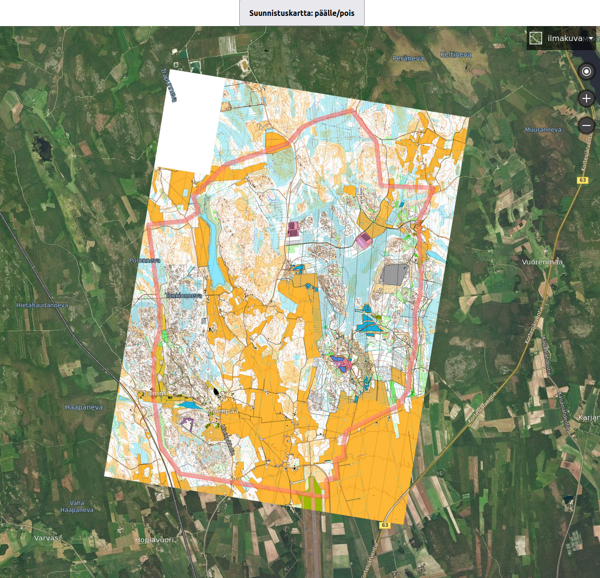
Jukola 2024 -alueen vanhat kartat (ja Mapantin karttaa) ja harjoituskieltoalueen raja
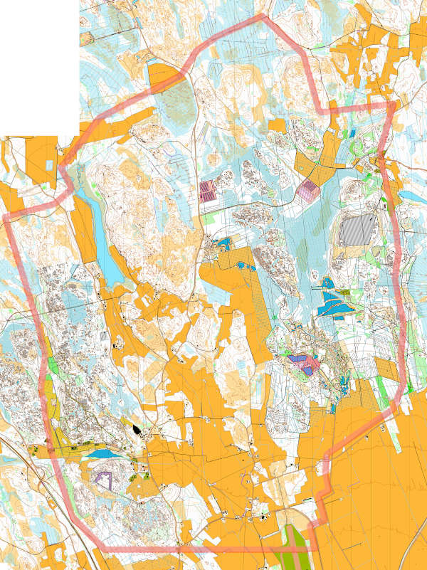
Jukola 2024 -harjoitteita
Alla on vanhoille Jukola 2024 -alueen kartoille lisätty mielikuviteltuja rastivälejä, joilla voi tehdä
mielikuvaharjoitteita ja pohtia millä keinoilla suunnistaisi eri välejä.
Huomaa, että laakeilla avokallioilla on referenssejä vähän ja siksi on syytä huolellisesti pohtia mitä haluaa tunnistaa maastosta.
Ja kumpareisilla alueilla (eli kartta täynnä pieniä muotoja) taas on syytä yksinkertaistaa karttaa ja valita olennainen.
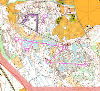
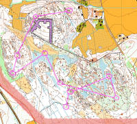
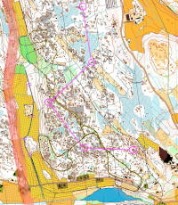
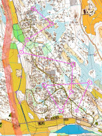
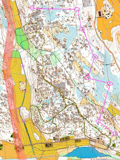
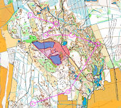
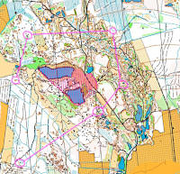
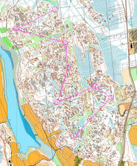
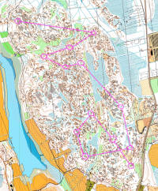
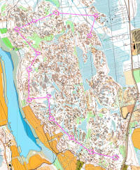
Linkkejä harjoitteluun ja kertaamiseen kotisohvalla
Satelliitti- ja ilmakuvat (katso eri linkkejä joissa kuvat on eri aikoina otettuja)
https://app.karttaselain.fi/ (Maanmittauslaitoksen tuoreet ja tarkat ilmakuvat kun laitat rastin kohtaan "Ilmakuvat")
https://maps.google.com/
https://www.bing.com/maps?cp=63.149964%7E23.044574&lvl=14.3&style=a&forcev8=1
Kartan symbolit
https://suunnistus.fi/perustaidot/karttamerkit/
https://www.suunnistusliitto.fi/system/wp-content/uploads/2014/08/Harraste_Karttamerkit_ja_kuvat.pdf
https://www.suunnistusliitto.fi/system/wp-content/uploads/2020/01/ISOM2017-2_FI_2020-01-15_suomennos.pdf
https://www.suunnistusliitto.fi/system/wp-content/uploads/2019/03/Rastinmaaritteet-2018.pdf
Ohjeita
Better orienteering
Youtube - Kuntoilija
Suunnistusliitto - Taitoa